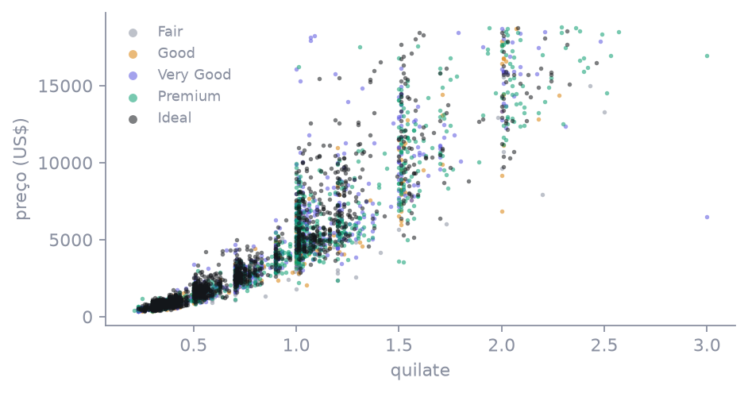
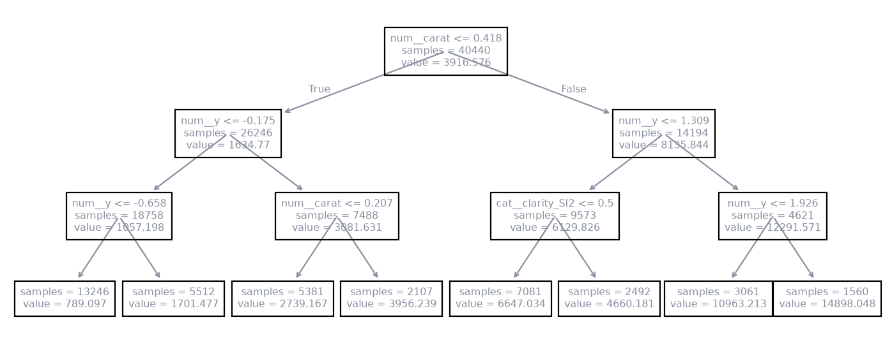
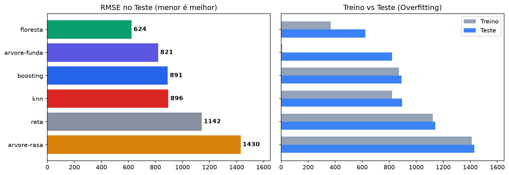
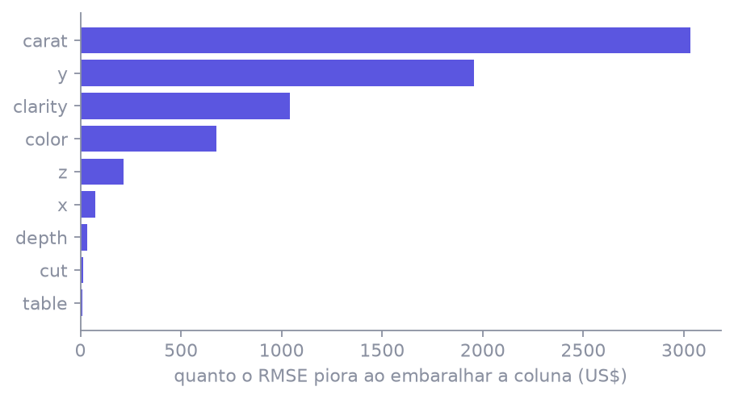

O mesmo tipo de alvo da aula 2: um preço. Mas agora a nuvem curva e as categorias se cruzam.
Aula ML 0422/1053.920 diamantes6 modelos no mesmo split
Use →← · M índice · P PDF · F tela cheia
Lembrando a aula 2
O mesmo alvo numérico, outro comportamento
Regressão com curvas e cruzamentos
Na aula 2, o custo do plano de saúde subia com a idade e o IMC quase numa linha. Hoje o alvo ainda é um valor em dinheiro (US$), mas a relação não é uma reta.
aula
alvo
relação entre as variáveis
modelo principal
Aula 2 (custos)
valor contínuo (US$)
aproximadamente linear
Regressão linear
Aula 3 (churn)
categoria (sai / fica)
duas classes com custos desiguais
Regressão logística & árvore
Aula 4 (hoje)
preço (US$)
curva e categorias que se cruzam
Árvores e Floresta (Random Forest)
A regra que fica: o alvo ser um número não decide o modelo. Quem decide o modelo é a forma da relação entre as variáveis.
cadernodiamonds.csv · Kaggle
53.920 pedras, uma linha por diamante
Cada diamante tem peso físico (quilates), qualidade visual (corte, cor, clareza) e dimensões milimétricas.
coluna
o que é
valores ou escala
papel
carat
peso em quilates (1 ct = 0,2 g)
0,20 a 5,01 ct
numérica
cut
qualidade do corte óptico
Fair, Good, Very Good, Premium, Ideal
categórica
color
grau de cor (incolor ao amarelado)
D (melhor/incolor) até J (pior)
categórica
clarity
pureza interna e inclusões
IF (pura), VVS, VS, SI até I1 (pior)
categórica
x, y, z
comprimento, largura e profundidade (mm)
dimensões tridimensionais
numéricas
price
preço de venda no mercado internacional
US$ 326 a US$ 18.823
ALVO (y)
Limpeza antes do split: das 53.940 linhas brutas, 20 pedras tinham x, y ou z igual a zero (erro de paquímetro/medição). Descartamos essas 20. Ficam 53.920. Split 75/25 fixo (40.440 treino / 13.480 teste).
cadernoPreço contra quilate · amostra colorida pelo corte
A nuvem curva e as variáveis se cruzam

O preço não sobe a passos constantes: de 0,5 para 1,0 quilate o preço dobra, mas de 1,0 para 2,0 quilates o preço dispara. Além disso, 1 quilate no corte Ideal vale muito mais que 1 quilate no corte Fair. Uma reta simples não tem como capturar isso com um único coeficiente.
Algoritmo 1 de 5 · A referência (baseline da aula 2)
Regressão linear
A ideia
Ajusta uma combinação ponderada das variáveis: cada coluna recebe uma inclinação (peso w) somada a um ponto de partida (intercepto b).
Quando usarquando você precisa explicar e citar coeficientes: “a cada quilate adicional, o preço médio varia US$ X”.
Cuidadoassume que tudo é plano e aditivo. Não enxerga que o efeito do quilate depende do corte, nem a aceleração do preço nas pedras grandes.
A equação do hiperplano
A fórmula da reta
Previsão contínua
símbolo
em palavras
xi
valor de cada coluna do diamante (após padronização numérica e one-hot)
wi
peso (coeficiente) aprendido no treino para aquela característica
b
intercepto global (ponto de partida da reta: −US$ 223)
ŷ
preço previsto em dólares
Métrica de teste: RMSE de US$ 1.142 (MAE 738). É a nossa barra de corte: qualquer modelo não-linear precisa ganhar dela!
cadernoDiamante 157 do teste · O que a reta prevê
Diamante 157, passo a passo
A pedra real2,01 quilates · Ideal Cor G · Clareza SI2 Real: US$ 18.259
Por que a reta errou tanto? Pedras raras de 2 quilates com corte Ideal sofrem uma valorização exponencial no mercado real. A reta tenta aplicar uma inclinação uniforme média e subestima o diamante em mais de US$ 4.000.
Algoritmo 2 de 5 · Perguntas em cascata
Árvore de decisão
A ideia
Faz perguntas de sim ou não, uma após a outra, particionando os dados em subgrupos cada vez mais homogêneos. A resposta final é a média de preço dos diamantes da folha.
Quando usarquando você quer regras transparentes que possam ser desenhadas e explicadas sem fórmulas: “se quilate > 1,0 e corte é Ideal, preço médio é X”.
Cuidadosem limite de profundidade, ela cria perguntas para cada detalhe e decora o treino com folhas de 1 elemento, errando grosseiramente em pedras novas.
Como a árvore escolhe onde cortar
Critério de divisão: redução do MSE
1 · O erro de uma folha (variância residual)
2 · Ganho da pergunta (redução de variância)
A árvore testa todas as colunas e pontos de corte, escolhendo a pergunta que mais reduz o MSE ponderado entre os ramos esquerdo e direito.
A primeira pergunta escolhida pelo algoritmo na raiz foi: quilate ≤ 1,0? Ela separa de imediato as pedras populares das pedras de alto valor.
cadernoÁrvore de profundidade 3 · O caminho do Diamante 157
Diamante 157 na árvore rasa

1
Nó 0: Quilate ≤ 1,0? Não (a pedra tem 2,01 ct) → vai para o nó 8 da direita.
2
Nó 8: Dimensão y ≤ 6,73 mm? Não (tem 8,10 mm) → vai para o nó 12.
3
Nó 12: Dimensão y ≤ 7,44 mm? Não → chega na folha 14.
A árvore sem limite criou folhas minúsculas e praticamente decorou o preço de cada diamante do treino.
No Teste (13.480 pedras)
RMSE US$ 821
No diamante 157 ela previu US$ 18.181, mas no teste geral o erro sobe 90 vezes em relação ao treino.
Lição: a árvore sozinha sofre de alta variância (instabilidade). É aí que surge a ideia central da aula: combinar várias árvores numa Floresta.
Algoritmo 3 de 5 · O comitê campeão
Random Forest (Floresta Aleatória)
A ideia
Treina um conjunto de 80 árvores independentes. Cada árvore vê um sorteio aleatório de diamantes (bootstrap) e sorteia um subconjunto de colunas em cada nó. A previsão final é a média de todas as árvores.
Por que funcionacada árvore erra para um lado diferente por ver recortes diferentes. Quando tiramos a média, o erro aleatório se anula e sobra o padrão real.
Resultadosegura o treino em RMSE 367 (sem decorar como a árvore funda) e atinge o menor erro de teste de todos: RMSE US$ 624!
A força da média
A fórmula da floresta
Média simples dos estimadores
termo
significado
B
número total de árvores na floresta (aqui: 80 árvores)
Tb(x)
preço previsto pela árvore individual b para o diamante x
max_depth
profundidade máxima de cada árvore (aqui limitada a 16 para evitar memória excessiva)
ŷ
preço médio final anunciado pelo modelo
Dois hiperparâmetros essenciais na prática: n_estimators=80 e max_depth=16.
cadernoDiamante 157 do teste · O voto das 80 árvores
Diamante 157 na floresta
1
Cada uma das 80 árvores avalia o diamante 157 com base em suas perguntas.
2
Árvores mais conservadoras previram cerca de US$ 10.972; as mais otimistas chegaram a US$ 18.168.
3
As primeiras árvores votaram: US$ 16.151, US$ 16.430, US$ 16.705, US$ 15.780…
MínimaUS$ 10.972
≤
Média (Floresta)US$ 16.131
≤
MáximaUS$ 18.168
→
RealUS$ 18.259
A média da floresta puxou a estimativa para US$ 16.131, reduzindo pela metade o erro que a reta e a árvore rasa cometeram!
Algoritmo 4 de 5 · Árvores em sequência
Gradient Boosting
A ideia: aprender com o erro da anterior
Em vez de árvores independentes em paralelo, o Boosting cria árvores em série. Cada árvore nova tenta prever exatamente o resíduo (erro) que as anteriores deixaram passar.
A fórmula sequencial
hm(x) = árvore treinada no resíduo · ν = taxa de aprendizado (learning rate, ex: 0,1) para dar passos curtos.
cadernoDiamante 157 do teste · A soma sequencial
Diamante 157 no Boosting
1
Começa com um chute inicial base: o preço médio global de treino (US$ 3.933).
2
A árvore 1 percebe que pedras grandes foram subestimadas e soma uma correção proporcional.
3
As 80 árvores seguintes vão ajustando detalhes de corte, cor e dimensões passo a passo.
Previsão final após 80 árvores = US$ 15.461 (erro: −US$ 2.798)
No teste geral: RMSE de US$ 891. Fica entre a reta (1.142) e a floresta (624). É muito competitivo e converge com poucas árvores.
Algoritmo 5 de 5 · Quem é parecido custa parecido
KNN Regressor (k = 15)
A ideia
Procura no treino os 15 diamantes geometricamente mais próximos no espaço padronizado e calcula a média de seus preços.
Distância Euclidiana
Quando cabequando os dados são locais e a base é pequena.
Custo altoaqui para prever 13.480 pedras de teste, precisou calcular distâncias contra 40.440 pedras a cada predição!
cadernoDiamante 157 do teste · Os vizinhos mais próximos no treino
Diamante 157 no KNN
vizinho
distância d
quilates
corte
cor
clareza
preço real
1
0,357
2,03
Ideal
G
SI2
US$ 12.573
2
0,362
2,00
Ideal
G
SI2
US$ 11.988
3
0,434
2,03
Ideal
G
SI2
US$ 17.182
4
0,463
2,05
Ideal
G
SI2
US$ 18.181
5
0,466
2,05
Ideal
G
SI2
US$ 18.017
Média dos 15 vizinhos = US$ 15.277 · RMSE geral no teste = US$ 896
cadernoExperimento aula-ml-4-diamonds · 13.480 pedras de teste
A tabela do MLflow
modelo
RMSE Teste
MAE Teste
RMSE Treino
diagnóstico
Árvore rasa (prof. 3)
1.430
812
1.411
underfitting (perde da reta)
Regressão linear (reta)
1.142
738
1.122
baseline / referência
KNN (k=15)
896
450
822
caro computacionalmente
Gradient Boosting
891
461
872
rápido e equilibrado
Árvore funda (sem teto)
821
384
9
overfitting severo
Floresta (Random Forest)
624
302
367
CAMPEÃ ABSOLUTA

cadernoQual variável manda no preço?
Importância por permutação

O teste da verdade
Embaralha uma coluna no teste e mede quanto o RMSE piora. Se o modelo depende da coluna, o erro explode.
Quilate piora o RMSE em +US$ 3.033! É a coluna soberana, seguida por y e clarity.
A importância interna da árvore (Gini/MSE) favorece variáveis contínuas numéricas. A permutação mede o impacto real nas previsões.
cadernoFechando a aula
A regra que fica & agora no caderno
Relação curva & categorias cruzadas
Use Random Forest ou Gradient Boosting. O erro de previsão cai quase pela metade em relação à reta.
Explicar coeficientes em relatório
Use a Regressão linear, sabendo exatamente o erro a mais que você aceitou tolerar pela simplicidade.
1
Abra o caderno aula-ml-4.ipynb e execute as células de treino e avaliação.
2
Abra o MLflow: mlflow ui --backend-store-uri mlruns e veja as 6 runs na interface.
3
Consulte a apostila-aula-4.pdf para acompanhar a matemática e o diamante 157.
Exportar os slides para PDF
Destino: Salvar como PDF. Margens: nenhuma. Gráficos de segundo plano: ativado.